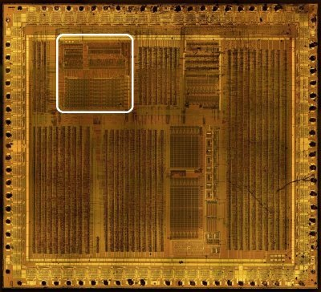
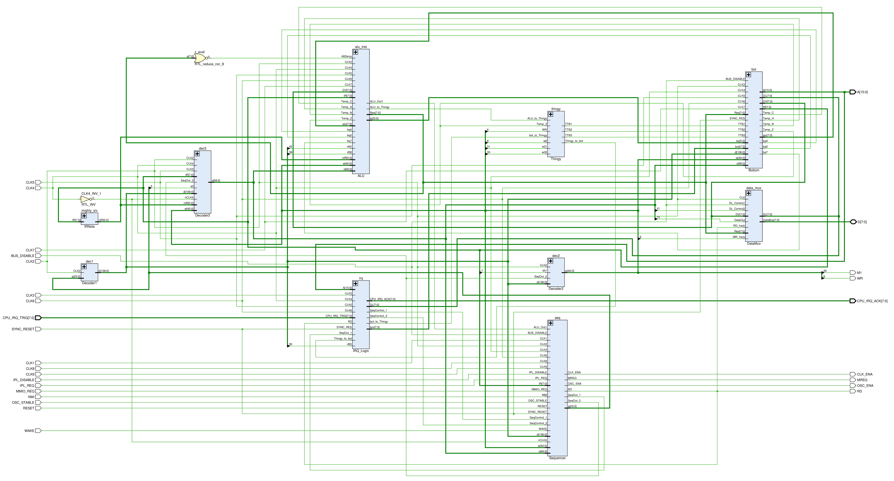
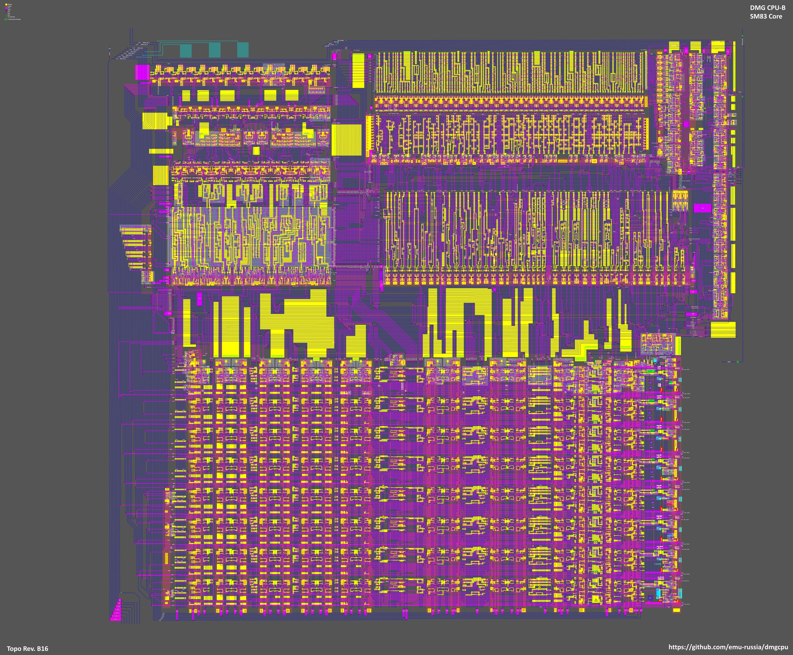

DMG CPU Core
This section is well developed and the schematics have been verified by simulation. The research for this section is complete. But sometimes clarifications are still added :-)
DMG-01 SM83 core research. The B revision of the DMG SoC is being studied.
The core can be found here:

Basic Circuit Designs
The core consists of the following main components:
- The ALU (upper left corner), random logic (looking like "spaghetti") and the flags register
- A decoder of three levels. Each level outputs a bunch of signals (
d,w,x) with a smaller number at each successive level. The main driving force for all the other parts is the set ofxsignals. Decoders are made as NAND/NOR trees + domino logic. - The sequencer occupies the right side and is built on "sort of" standard cells. Actually they are not cells in the usual sense, but "handmade" using standard modules and tweaking them a little bit in some places as required.
- At the bottom is part of DAA logic, the registers block, the SP, the PC and Incrementer/Decrementer. Also obviously there is a small circuit for interrupt control and a small but important circuit called the "Thingy".

Latest Progress
At the moment, the entire topology have been obtained. The basic circuit principles are understood and the transistor circuits of most of the modules are obtained. The main emphasis was made on the sequencer circuit, as the most demanded one.
The SM83 research has been completed and the circuits verified in the simulator.

Regression Testbench (issue #400)
The core is exercised by an Icarus regression suite that drives the real
SM83 netlist (HDL/sm83/Top.v SM83Core + module files) with the CPU
clock generator and a flat memory model:
-
HDL/sm83/Icarus - suite waves (register file, ALU+flags, memory addressing, stack, jumps, IRQ, instruction timing)
-
HDL/sm83/Icarus - STATUS.md (research log with measured facts)
-
run everything with
./run_all.shinHDL/sm83/Icarus(each test printsRESULT ... PASS/FAIL).
Measured facts (real-netlist checks, all PASS):
-
register file/pair loads, stack + memory addressing match the SM83 programming model byte-exactly;
-
ALU flag law verified for ADD/ADC/SUB/SBC/AND/OR/XOR/CP over multiple operand pairs incl. carry-in;
-
relative jumps taken/not-taken + RST vector pages;
-
IE/IME/IF interrupt dispatch: HALT wake, PC push, IF ack-clear, vectors $40/$48/$50;
-
HALT modes: clean stop with IME=0/IE=0, IF-wake without vector when IME=0, halt-bug setup (no stop, no vector);
-
CB-prefix + rotate law: RLC/RRC/RL/RR/SLA/SRA/SWAP/SRL on A, BIT/RES/SET b,A; the A-only rotates (RLCA/RLA/RRCA/RRA) clear Z on the SM83 (netlist-verified), the CB forms set Z from the result;
-
instruction T-states measured via M1-M1 intervals (NOP 4, LD r,n 8, JR taken 12 / not 8, JP 16, CALL 24, RET 16, ...).
Why SM83?
There is a manual from Sharp: https://archive.org/details/1996_Sharp_Microcomputer_Data_Book/page/n147/mode/2up
On page 148 of this PDF (or page 140 if you look at the original page numbers of the scan), it describes four microcomputers (SM8311, SM8313, SM8314 and SM8315). They all contain a CPU core that is labeled "SM83CPU" in the diagram on the next few pages, which has exactly the same instruction set and the same timings that the Game Boy CPU has. That is why we call the Game Boy CPU "SM83". It seems to be the official name from Sharp for this core. I think @Gekkio found this originally, but I'm not sure. Before we knew about this document, most people called the CPU "LR35902", because this was the label that was printed on the first batch of the rev. 0 chips. It seems to be that LR35902 is the name of the SoC as a whole, and SM83 is the name of the CPU core that was used inside. But I think we can't be 100% sure that they really called this CPU SM83 back in 1989, or if they retroactively labeled it that when they reused it for those microcomputers in this 1996 data book.
by @msinger (Discussion #13)
Gekkio Research
There is also an SM83 research by @Gekkio: https://github.com/Gekkio/gb-research/tree/main/sm83-cpu-core
All places where there is any parallel with his research (signal names) are marked as Gekkio.
Michael Singer Research
Michael Singer (@msinger) also conducted the SM83 research, results can be found here: